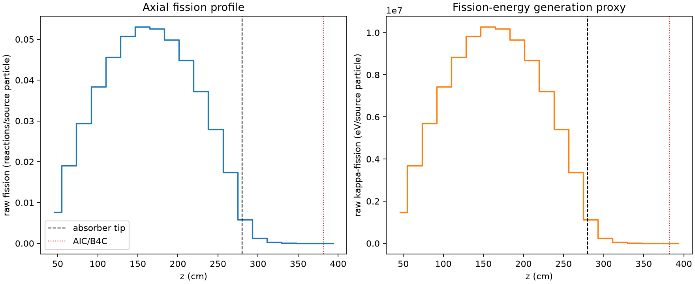
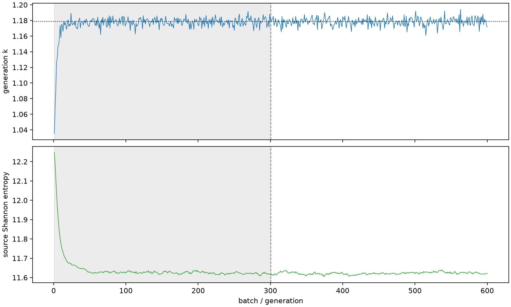

| field | value |
|---|---|
| experiment | V2-STAGE_128_OGRENCI_03-0003 |
| k | 1.178614963730811 |
| MC standard error | 0.00018382635221327623 |
| seconds | 937.563297753004 |
| acceptance | not_assessed |
| convergence | review_required |
Completed is output integrity only; physical and statistical review required. Zero tallies do not prove zero production or zero uncertainty.
| diagnostic | value |
|---|---|
| geometric fuel voxels | 5280 |
| zero fission tally voxels | 9 |
| low signal fuel voxels | 854 |
| low signal fission share | 8.544159508242405e-05 |
| low signal kappa share | 8.547110542828627e-05 |
| important fission share | 0.9500825957489651 |
| previous filter included | 4426 |
| duration estimate s | 1562.5173488400023 |
| actual minus estimate s | -624.9540510869983 |
| fission relative MC error | statistics |
|---|---|
| all_geometric_fuel | {"voxels": 5280, "positive_mean_voxels": 5271, "zero_mean_voxels": 9, "undefined_relative_error_voxels": 9, "median": 0.01149331873111715, "p95": 0.6668263141307657, "maximum": 1.0000000000000002} |
| low_signal | {"voxels": 854, "positive_mean_voxels": 845, "zero_mean_voxels": 9, "undefined_relative_error_voxels": 9, "median": 0.5196908551495961, "p95": 0.9822221268460172, "maximum": 1.0000000000000002} |
| important_95pct | {"voxels": 3028, "positive_mean_voxels": 3028, "zero_mean_voxels": 0, "undefined_relative_error_voxels": 0, "median": 0.008438180249573955, "p95": 0.012676344069968032, "maximum": 0.01610496578760921} |
| outside_previous_filter | {"voxels": 854, "positive_mean_voxels": 845, "zero_mean_voxels": 9, "undefined_relative_error_voxels": 9, "median": 0.5196908551495961, "p95": 0.9822221268460172, "maximum": 1.0000000000000002} |
| kappa_fission relative MC error | statistics |
|---|---|
| all_geometric_fuel | {"voxels": 5280, "positive_mean_voxels": 5271, "zero_mean_voxels": 9, "undefined_relative_error_voxels": 9, "median": 0.011481731022920515, "p95": 0.6662718471795721, "maximum": 1.0000000000000002} |
| low_signal | {"voxels": 854, "positive_mean_voxels": 845, "zero_mean_voxels": 9, "undefined_relative_error_voxels": 9, "median": 0.5190882360456124, "p95": 0.9822209990407025, "maximum": 1.0000000000000002} |
| important_95pct | {"voxels": 3028, "positive_mean_voxels": 3028, "zero_mean_voxels": 0, "undefined_relative_error_voxels": 0, "median": 0.008428297801374997, "p95": 0.012661850297937115, "maximum": 0.016085891053830546} |
| outside_previous_filter | {"voxels": 854, "positive_mean_voxels": 845, "zero_mean_voxels": 9, "undefined_relative_error_voxels": 9, "median": 0.5190882360456124, "p95": 0.9822209990407025, "maximum": 1.0000000000000002} |
| axial bin | fission share | kappa-fission share |
|---|---|---|
| 1 | 0.01586155610400292 | 0.01586225007112635 |
| 2 | 0.039606309731846645 | 0.03960620430503714 |
| 3 | 0.06110677262550822 | 0.061106404022699755 |
| 4 | 0.07978270957405142 | 0.07978239149357438 |
| 5 | 0.09477112000542365 | 0.09477094145368369 |
| 6 | 0.10540781166749813 | 0.10540744665484196 |
| 7 | 0.11022883623878106 | 0.11022842198460332 |
| 8 | 0.10932420464983372 | 0.10932364715589175 |
| 9 | 0.10372897968293676 | 0.10372841153871885 |
| 10 | 0.09318480254452985 | 0.09318417208811794 |
| 11 | 0.07738325835591907 | 0.07738311307612258 |
| 12 | 0.05807032377497783 | 0.05807016685853934 |
| 13 | 0.03611950621013283 | 0.03611955685775603 |
| 14 | 0.01204554593095491 | 0.01204741755812771 |
| 15 | 0.002534264516362384 | 0.002535162095061765 |
| 16 | 0.0006409799170400321 | 0.0006412026156331844 |
| 17 | 0.00015315065516014514 | 0.00015320480396122083 |
| 18 | 3.8350731938248757e-05 | 3.836286308761865e-05 |
| 19 | 9.58871799070421e-06 | 9.591758355370054e-06 |
| 20 | 1.928365111540771e-06 | 1.9307450600776665e-06 |
Histories include the inactive-to-active transition at batch 300. kappa-fission approximates fission energy production, not total heat deposition.

